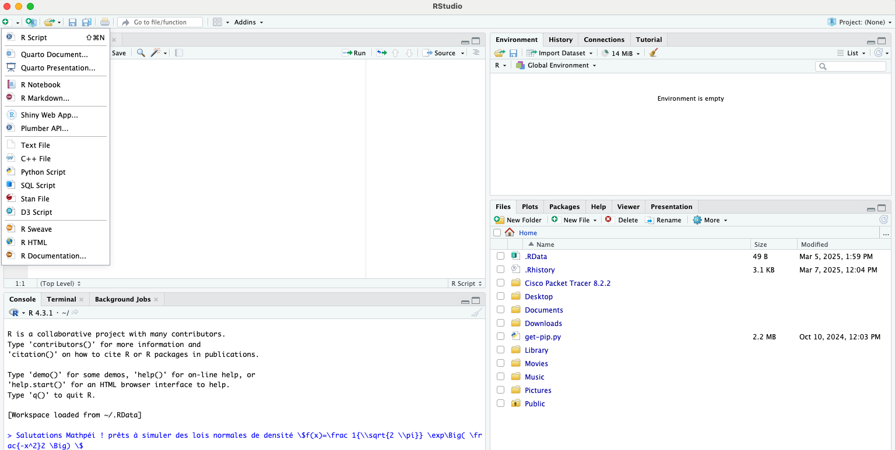

Installer R-Rstudio
R est un langage de programmation et un environnement logiciel pour le calcul statistique et la visualisation de données. Il est largement utilisé dans les domaines de la statistique, de l'analyse de données et de la science des données.
RStudio est un environnement de développement intégré (IDE) pour R. En licence, il est probable qu'il soit abordé ou proposé en UE à choisir (comme l'UEO à l'Université de La Réunion)
Pour installer R et RStudio, suivez les étapes sur le site de Posit. Attention, il faut télécharger et installer R et Rstudio (qui sont deux applications différentes).
Comme pour Jupyter, je vous conseille d'organiser vos projets dans un ou des dossiers pour vous y retrouver.
Au cas où vous débutez et/ou avez des difficultés avec R, je vous conseille ce Cours OpenClassroom pour bien débuter.
Les Markdown sur R-Studio
R-Studio est assez simple dans son fonctionnement :
En ouvrant l'application, vous avez en bas à gauche la console R (qui est l'interface où sortent les résultats de vos commandes), en bas à droite une petite fenêtre d'affichage, et en haut à droite une fenêtre avec quelques informations.
Quand vous appuyez sur le bouton "New File" dans la barre du haut tout à gauche, l'application vous propose une poignée de choix, évidemment vous risquez d'écrire plusieurs fichiers de code "R Script", mais ce qui m'intéresse ici est le "R Markdown".
Ce format est selon mon humble avis le plus pratique et le plus simple pour écrire des commentaires, des explications, des résultats de calculs pour s'y retrouver dans votre travail. De plus, vous pouvez y insérer du LaTex entre "$" comme vous pouvez le voir ci dessus.
Et comme prévu, en cliquant sur "Visual" dans la barre du haut, vous pouvez voir le rendu de votre feuille Markdown :

Il suffit de cliquer sur "Tools" puis sur "Globals Options…"
Ensuite il suffit de cliquer sur "Copilot" tout en bas, et de cocher la case "Enable Copilot" pour l'activer. Vous pouvez aussi choisir de l'activer uniquement pour les projets R-Studio, ou pour tous les projets.